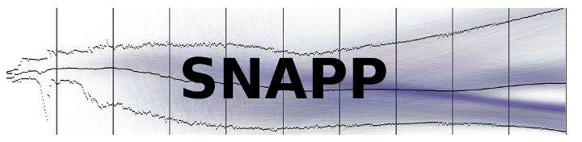
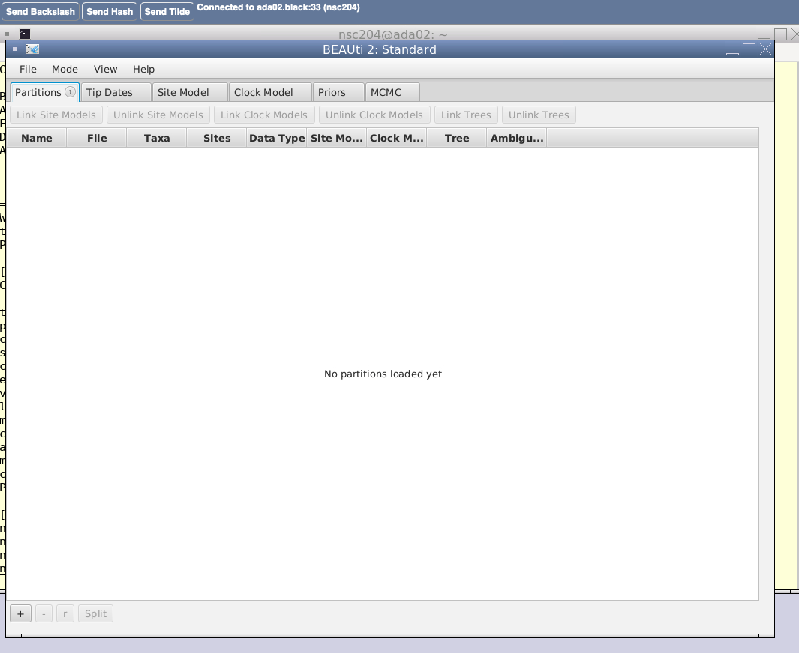
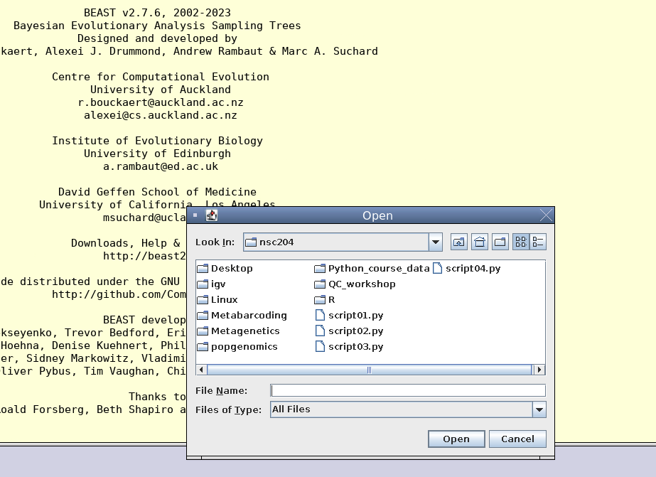
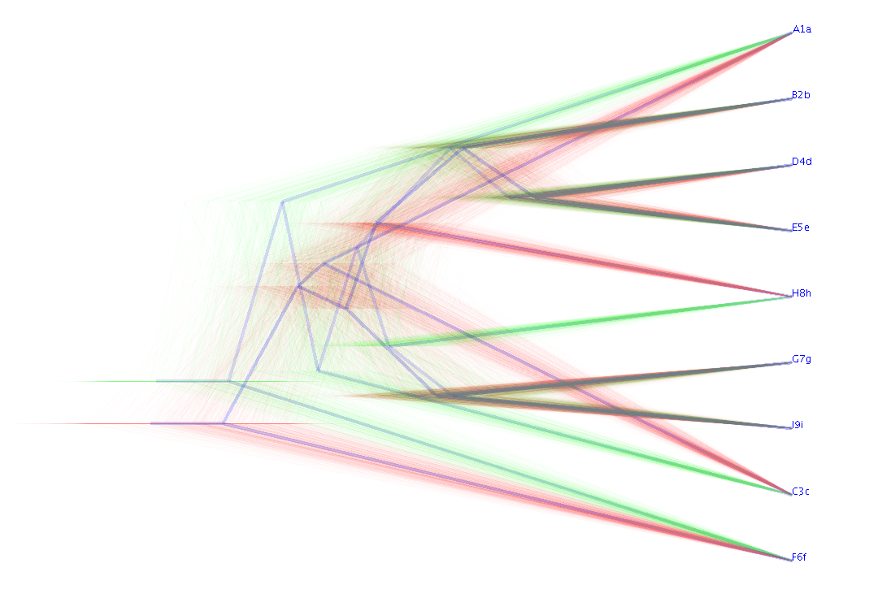
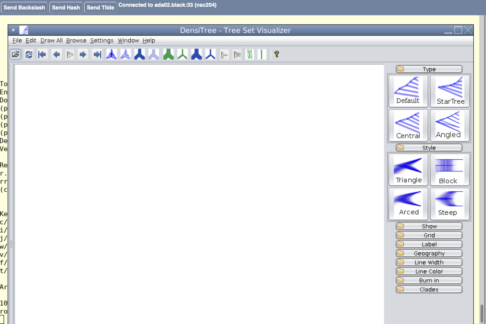
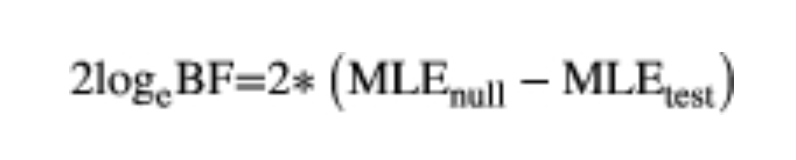

Chapter 9 Species delimitation with the Multispecies Coalescent
9.1 beast2
In this section, we are going to use beast2 ('Bayesian evolutionary analsis by sampling trees') to explore species delimitation and taxonomic hypotheses further through the Multispecies Coalescent (MSC). beast2 is a large, but versatile, package that applies Bayesian approaches in a multitude of different phylogenetic, demographic and species delimitation analyses. Many different add-ons or plug-ins, such as those that we will be using, are developed and maintained separate to the main package.
We'll conduct two different analyses, both using the add-on package SNAPP (SNP and AFLP Package for Phylogenetic analysis). More information on the package can be found here. We will also need the plug-in MODEL-SELECTOR. These have already been installed on the webVNC.

INSERT A LITTLE BACKGROUND TO THE MSC
The application of the MSC used in SNAPP is based on an algorithm developed by Bryant et al. (2012) specifically for biallelic markers that allows the inference of a species tree directly from the markers themselves. It evaluates lineage and allele probabilities on a tree directly, rather than imputing a gene-tree for each marker and then integrating these individual trees, which is computationally-demanding for many genomic data sets. The key assumptions are that the markers are biallelic and the genealogies of each marker are independent (i.e., the markers are unlinked). The vast majority of our SNP markers are be biallelic, and we'll assume they are unlinked, given that we only used one SNP from each RADtag when compiling the data.
9.2 Gene tree - species tree conflicts
We'll first use SNAPP to examine gene tree - species tree conflicts or concordance. This will be particularly useful to determine whether taxonomic separation mirrors actual divergence replicated across many markers or whether there are conflicting, alternative relationships from the underlying "gene trees". It provides a picture of the uncertainty of the topology of the "true" species tree. The underlying conflicts could result from incomplete lineage sorting, hybridization, introgression, horizontal gene transfer, gene duplication or some analytical artifacts. It provides another means to assess the confidence we have in our species tree, our taxonomy (or another hypothesis we are testing) and provides some nice figures for publication or animations for presentations!
9.2.1 Setting up the analysis
For this exercise, we'll use a compiled data set from the Hosegood et al. (2020) study, containing a number of samples of Mobula japanica and Mobula mobular, as well as one sample of Manta alfredi. _Mobula japanica is now considered a synonym of Mobula mobular. The data set contains samples from across the distribution of the former Mobula japanica. This choice of taxa is explained in the next analysis. This file has been prepared exactly as we did for the earlier files, excluding all missing data. The alignment has been compiled and saved in the nexus format for use in beast2. The nexus format is another widely-used, cross-platform format for alignments of sequences (or other data sets) for phylogenetic analysis. You can find more information about the nexus format here. There are several packages that will allow you to convert the phylip-formatted file into a nexus-formatted one, and many alignment and analytical packages will let you output your data as either (Stacks is not one of these). It is also quite easy to create the file yourself from your phylip file or an aligned file in fasta format, as long as you know the relevant format and headers, and the dimensions and nature of your data.
To take a look at our data in nexus format, you can navigate to the directory where the files for this chapter are located:
Then open the nexus file:
All input for beast2 needs to be converted to an 'xml' file, which will include the data (the sequence alignment), all the model parameters and priors needed for the analysis and the specifications of the run itself. Fortunately, beast2 provides a package - BEAUti (Bayesian Evolutionary Analysis Utility) - to prepare the data and set all these parameters. This is also a package manager for installing the various beast2 add-ons. We'll use this to prepare our input file.
Launch BEAUti by typing
At this point, you may be asked whether an update to beast2 should be installed. Please choose "No" or "Not yet". Once open, you should see a graphical interface that looks like this.

From
Fileon the taskbar/menu, selectTemplateand thenSNAPP. The tabs of the window should change to accommodate our SNAPP input and should be different to the image above, with only four tabs above the window.Now import your nexus-alignment, by selecting
File, thenAdd Alignment, navigating to and selecting the file ('mobular_japanica.nex'). The taxa in our analysis will then appear in the 'Taxon sets' window. On the left is a list of the taxa in our file and on the right (under 'Species/Population') is the arrangement we are proposing with respect to species membership or taxonomy. BEAUti assigns these automatically based on the taxon or sample names in our alignment. You can click theGuessbutton at the bottom to specify how this assignment is done (i.e., specifying which characters are used as delimiters to parse the name, which parts of the name to use, etc.). Alternatively,Fill downwill allow you to edit the text of the 'Species/Population' column directly.
For the purposes of getting interesting output from this exercise, we will ignore the current taxonomy. Ordinarily, that would be a sensible scenario to evaluate, but a tree with just two divergent species (the synonymised Mobula japanica and Mobula mobular vs. Mobula alfredi) is not going to be very interesting and it's unlikely that there are many alternative topologies or any evidence of conflict underlying this species tree. Instead, to show the utility of this analysis, we will evaluate a tree with five different species. We will consider M. mobular and M. alfredi as separate species, and we will then regard the different geographic populations of M. japanica to each represent an independent species from the Western Pacific ('WP'), Persian Gulf ('PG') and Eastern Atlantic ('EA'), respectively. Use the Fill down button and assign each of the samples to one of these five species in the 'Species/Population' column. Alternatively, you can create five species of your own and randomly assign samples to these. Don't define more than five species or the analysis may take too long to run.
- Model parameters need to be set under the 'Model Parameters' tab. Here, we'll set the parameters for v (the mutation rate from allele 0 to allele 1), u (the mutation rate from allele 1 to allele 0) and the coalescent rate. You can leave u and v set at 1 or use the
Calc mutation ratesbutton below to estimate the mutation rate. By clicking theSamplebutton next to any parameter, we choose to have these sampled from the posterior distribution. For the mutation rates, it is not necessary to sample these; we merely need to set the initial values. We do want to sample the coalescent rate from the posterior distribution, otherwise we are assuming equal population sizes. In this version of BEAUti, you should see see little circular icons next to some of the fields; older versions might not have this. These open windows that allow us to set upper and lower bounds on these rates. We'll leave these unset for now, but you may have reason (and the information) to set these in your own analysis.
We need to indicate whether our data include non-polymorphic sites. Given the way our data were compiled, there shouldn't be any constant sites. Make sure that the 'Include non-polymorphic sites' box is not flagged/.
Also be sure that the 'Mutation Only At Root' box is not checked. This specifies zero mutations except at the root, which will effectively make all the branches coalesce at the root and not within the tree. This is only really used to determine model parameters in some other applications.
- The 'Prior' tab lets us set the priors for the tree and rates. The choice of priors is always a contentious issue and too often the temptation is to use the defaults. You'll need to consider biologically relevant priors, carefully considering the nature of your data, or alternatively consider whether your data and analyses are robust to the choice of prior. Two important priors need our attention.
The tree prior in SNAPP is a Yule prior for the topology and branch lengths of the species tree, which is controlled by a single parameter, lambda. In essence this is the speciation rate, which represents the prior expected 'height' of the tree. By setting a high value, we are providing prior information that we expect more species to be contained in the tree and delimited than with a low value. Generally, we can use fixed values or a broad prior (typically with a gamma distribution). There is a handy Python script 'pyule' for modelling lambda.
The rate prior, which is determined by theta, specifies the mutation rate variation over the tree, which is influenced and modeled via ancestral population sizes at each node.
If we are sampling any of the priors in our analysis, we need to specify hyperpriors. As in the Hosegood et al. (2020) paper, we will leave the prior settings for lambda, theta, u, v and the settings of the hyperpriors as the defaults.
- Lastly, we'll set the dimensions and "instructions" for the MCMC run in the MCMC tab. In order to keep this example short, we'll use only 100 000 generations ('Chain Length'), keeping every 100th generation sampled from the posterior distribution ('Store Every'). Edit these to reflect this. You can also set the parameters of the 'tracelog', 'screenlog' and 'treelog' by clicking the drop-down arrows further below. Edit the logging frequency of the 'tracelog' and 'treelog' to log every 100th generation to keep this "in step" with the actual sampling.
Once that is done you can save the 'xml' file by selecting File and Save, giving it a 'mobula_japanica' as a name. The 'xml' extension is automatically added. You can then exit BEAUti by clicking File and Exit.
9.2.2 Starting the analysis
Once the 'xml' file is set up, starting the analysis is straightforward. Call up beast2 with the following code and this will launch a graphic interface (like the image below):

In this, navigate to and Open the file we just saved. The analysis will start on opening the file. If there are results or log-files from a previous beast2 run, you will be asked if you want to overwrite these. Please do.
Once started, this SNAPP analysis will take a few minutes to run.
9.2.3 Examining the results
The analysis will produce a 'snap.log' and a 'snap.trees' file. The 'snap.log' contains the likelihood and the theta parameters sampled from the posterior distribution at each sampled generation or step. The 'snap.trees' file contains the topologies, branch-lengths and theta estimates from each of these sampled generations. These each represent a potential species tree based on the likelihoods of allele changes and lineage coalescence of each marker through the tree.
You can look at the two files with the following commands:
As with all Bayesian, MCMC-based approaches, it is important to evaluate the output for stationarity (determining the length of the burn-in, ensuring the MCMC run was sufficient to sample the posterior distribution effectively), convergence or the sufficient sampling of parameters (through the Effective Sample Size or ESS), and, in the case of multiple runs, that there was convergence on the same part of the posterior distrbution. We will not attempt that here; these results may not be particularly well-sampled anyway. However, Tracer is a useful tool to examine these features graphically and manipulate the log and tree files (e.g., specifying and removing the burn-in) for further analysis.

We will, however, examine the species tree and the uncertainty around the underlying gene trees by generating a tree cloud or "cloudogram" in DensiTree. There is also an overview of DensiTree here.
Open DensiTree, with the following command:
This will also open a graphic interface, which should look like this:

Click File and Load or use the folder icon to navigate to your 'snap.trees' file and open it. The trees will now be displayed. There is a wealth of functionality available with respect to editing the display and "look" of the tree cloud and consensus trees, specifying and eliminating burn-in, putting confidence limits around clades. More excitingly, you can view your trees as animation, scrolling through them and building the full tree set from those sampled. The best way to come to terms with the features is to play around with the package.
In terms of interpretation: - The most popular/common tree is consensus is blue (as are any consensus trees) - The next most popular tree is red. - The third most popular tree is green. - The remainder are all dark green. - Any obvious conflicts and differences in topology should be apparent from different branching structures in the tree cloud, and - Different branching depths represent difference coalescent events (depending on the markers) at different points in the past.
Close DensiTree with File and Exit.
Now that we have seen the uncertainty undelying that particular, wildly-inaccurate species arrangement, we will do more rigorous statistical testing of alternative taxonomic models.
9.3 Bayes Factor Delimitation
'Bayes Factor Delimitation (*with genomic data)' or BFD* is used to test various user-defined species boundaries or species-designation hypotheses. It essentially evaluates, within a Bayesian Posterior Probability framework, which assignment of genetic lineages to which species is most plausible. In this analysis, we will propose a base scenario or null hypothesis against which we will test alternative taxonomic hypotheses or arrangements. We will run each scenario and then do a quick "desktop" statistical evaluation to compare these. Unlike the exercise in a preceding chapter, where we tested these hypotheses purely on the basis of the tree topology, here we are using the MSC to model coalescent events backwards in time, considering the multitude of gene trees (and potential conflicts) and demography that underlie any given topology.
Unfortunately, this analysis can be very time-consuming or limiting. There is a great tutorial available, and its authors do not recommend this analysis for testing more than 20 species. Hosegood et al. (2020) employed an elegant strategy where they focused on each clade in their tree separately, completing the analysis by testing smaller sets of species, but including a few representatives of a sister clade in each such test to consider the "deeper" species boundaries. The data we have compiled and used above is of one of these subsets. When analysing your own data, the number of samples has a much greater impact on the analysis time than the number of SNPs, so a good approach would be to include only a few representatives of the species you want to test and gradually add data (samples) to your analysis when it starts to produce reliable and reasonable results.
9.3.1 Setting up the analysis
Although we will again use BEAUti to compile our data and run the analysis in beast2 and SNAPP, the implementation of this analysis is slightly different to that above. We will first create a base 'xml' file, which represents the taxonomic arrangement that we want to compare the others to - our null hypothesis. We'll similarly create 'xml' files for the alternative hypotheses. Then, some text editing of these files is required to enable the Path Analysis for the calculation of Marginal Likelihoods. Thereafter, some desktop statistical analysis is needed to compare and select the competing hypotheses.
Open up BEAUti as you did above and load the SNAPP template.
Open the 'mobular_japanica.xml' file that you created in the preceding section. We will use that as a basis for this analysis, changing a few parameters.
For our base scenario, we will use the currently-accepted taxonomy. Change the species names of M. japanica to M. mobular (these species have been synonymised), and change Manta_alfredi to Mobula alfredi in the 'Species/Population' column.
The model parameters need to be set up under the 'Model Parameters' tab exactly as you did above. These should not need any editing, but it is worthwhile to check the parameters. The only additional task is to tick the
Use Log Likelihood Correctioncheckbox. This calculates corrected likelihood values in the Bayes Factor assessments of the different species arrangements.In setting the priors under the 'Prior' tab, we'll follow Hosegood et al. (2020) and implement a gamma distribution for the lambda prior. Select this from the drop-down to the right of 'lambda'. These authors also assessed the effect of a 1/X prior; testing alternative priors and seeing how these impact your results is a means of evaluating the robustness of your results and data, as mentioned above.
Under the 'MCMC' tab, we'll use the same parameters as above. Make sure the 'Chain Length' is set at 100 000, 'Store Every' at 100, 'Pre Burnin' at zero and 'Num Initialization Attempts' at 10. Under the 'tracelog' drop-down (arrow) change the 'File Name' to 'runA.log', and set the 'File Name' under the 'treelog' drop-down to 'runA.trees'. You can leave the 'Log Every' for each of these set at 100.
Save the 'xml' file as 'runA.xml', and exit BEAUti.
This file needs some additional text editing to set up the Path Analysis in beast2 to the estimate the Marginal Likelihood. The tutorial instructions for making these edits. This has already been done and the file has been saved here as 'runA.xml' in a directory with the same name ('runA'). Through this editing, the analysis has been set to run 10 path sampling steps with a MCMC chain of 10 000 steps for each. A burn-in of 10% was also specified for analysing the log files. Note that these parameters and the MCMC settings above could be unrealistically low and will need to be explored in a full analysis; we are only using these so that we can complete the analysis during the workshop.
Following the same procedure, we need to compile and edit similar 'xml' files for the other species delimitation models or scenarios we want to test in subsequent runs.
These, which represent the scenarios tested by Hosegood et al. (2020), are:
Run B: Manta alfredi and Mobula mobular are lumped as one species, an arrangement that was proposed before, with Mobula japanica as another species.
Run C: A split between Atlantic-Mediterranean and Indo-Pacific individuals.
Run D: A random assignment of individuals to two species.
These files are already compiled and placed in the respective 'runB', 'runC' and 'runD' directories.
9.3.2 Running the analysis
We can now complete the Path Analysis for each of these scenarios.
Navigate to the 'runA' subdirectory.
We will launch beast2 from a command line. This is handy as the GUI does not always work for some applications, like this one. The command line also lets you set the number of threads to use, which you can't do in this particular version of the beast2 GUI.
If you use this approach outside of the webVNC, /pub14/tea/nsc206/bin/beast/bin/beast will need to be replaced with the path to the beast executable on your computer or HPC.
The analysis will take a few minutes to run. Once it is complete, the Marginal Likelihood for this hypothesis will be presented in the terminal. Also note the Effective Sample Size (ESS) scores.
What is the Marginal Likelihood for the Run A hypothesis (the current taxonomy)? Note that your estimates may not match exactly.The ESS scores are very low, indicating that these parameters have not converged and are not well-sampled. At a minimum, we would like these to be > 200. This is not suprising given the low sampling by the chains in both the SNAPP and Path Analysis parts of our analysis.
We can then repeat this for Run B.
# Change directory to 'runB'
cd ../runB
# Start the analysis
/pub14/tea/nsc206/bin/beast/bin/beast -threads 8 runB.xmlNow do the same for Runs C and D.
# Change directory to 'runC'
cd ../runC
# Start the analysis
/pub14/tea/nsc206/bin/beast/bin/beast -threads 8 runC.xml# Change directory to 'runD'
cd ../runD
# Start the analysis
/pub14/tea/nsc206/bin/beast/bin/beast -threads 8 runD.xml9.3.3 Selecting the taxonomic hypothesis
Once this is done, we'll rank our Marginal Likelihoods and use Bayes Factors to evaluate competing hypotheses.

This is a small desktop exercise that is done as follows:
Sequentially compare the Marginal Likelihood of each alternative hypothesis to that of the null hyopthesis or base model. You could also compare the alternative hyoptheses with each other, if of interest.
The Bayes Factor is calculated as BF = 2 x (Marginal Likelihood of model 1 - Marginal Likelihood of model 2)
The resulting BF can be interpreted in the following framework:
- 0 < BF < 2: Negligible difference between the two models,
- 2 < BF < 6: Positive evidence that one model is better,
- 6 < BF < 10: Strong evidence that one model is better,
- 10 < BF: It's decisive! One model is better.
Is the current taxonomy the best species arrangement, given the limited data we have used and our very limited analysis)? This is not answered definitively here, because you may have had different likelihoods calculated by the sampling regime in your analysis. Based on the values in the MCQs above, the arrangement by ocean region is a decisively better arrangement than the current taxonomy and the other arrangements are decisively worse. This could well be an artefact of the sampling distribution of the examples we included to represent the current taxonomy.
Congratulations! You have made it to the end of the initial part of the workshop. Please feel free to work through additional examples in the supplemental workbook.